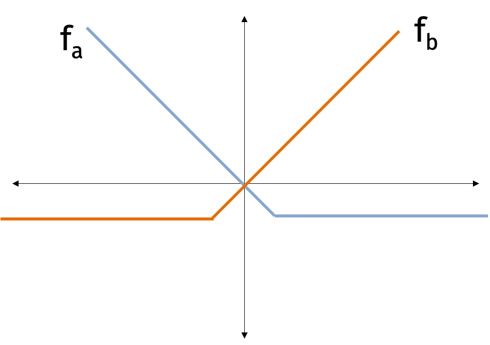
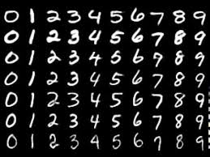

Online and Stochastic Gradient Descent
Recall the standard optimization setting. We are given a function \(f:\mathbb{R}^d \to \mathbb{R}\) to minimize, a function oracle and a gradient oracle. The function oracle returns \(f(\mathbf{x})\) and the gradient oracle returns \(\nabla f(\mathbf{x})\) for any input \(\mathbf{x} \in \mathbb{R}^d\). The goal is to minimize the number of calls to the oracles to find an output \(\hat{\mathbf{x}}\) such that \[f(\hat{\mathbf{x}}) \leq \min_{\mathbf{x}} f(\mathbf{x}) + \epsilon\] for \(\epsilon > 0.\)
In machine learning applications, the function \(f\) is typically a loss function defined for a particular training dataset. Today, we’ll discuss the online setting where the dataset changes over time. Examples of the online setting include:
Spam filters that are incrementally updated as new types of spam emails are developed.
Text recommendation engines like Github Copilot that need to be updated as software libraries change.
Content recommendation systems that need to adapt to user behavior and clicks over time.
Image recognition systems such as iNaturalist that are updated with user expertise.
Online Learning
Consider a model \(M_\mathbf{x}\) parameterized by parameters \(\mathbf{x}\). We want to find good parameters to minimize a loss function \(\ell\) but the data we are optimizing with respect to is changing over time. At each step \(t=1,\ldots,T\), we receive data vectors \(\mathbf{a}^{(1)}, \ldots, \mathbf{a}^{(T)}\). For each step \(t\), we choose a parameter vector \(\mathbf{x}^{(t)}\). After we make the prediction \(\hat{y}^{(t)} = M_{\mathbf{x}^{(t)}}(\mathbf{a}^{(t)})\), we receive the true label \(y^{(t)}\). We then use the information to choose the new parameter vector \(\mathbf{x}^{(t+1)}\) for the next time step. The goal is to minimize the cumulative loss \[ \mathcal{L} = \sum_{t=1}^T \ell(\hat{y}^{(t)}, y^{(t)}). \] This framework works for many loss functions and models. One popular setting is linear regression where \[ \ell(\hat{y}^{(t)}, y^{(t)}) = ||\langle \mathbf{x}^{(t)}, \mathbf{a}^{(t)} \rangle - y^{(t)}||^2. \] If the model was a neural network, we could update the model to make it more complicated. If the task was classification, we could use cross-entropy loss.
Let’s abstract the online setting and analyze it. Instead of a single objective function with different data points, we have a sequence of objective functions \(f^{(1)}, \ldots, f^{(T)}: \mathbb{R}^d \to \mathbb{R}\). For time step \(t=1,\ldots, T\), we select a vector \(\mathbf{x}^{(t)} \in \mathbb{R}^d\). We then observe \(f_t\) and pay cost \(f_t(\mathbf{x}^{(t)})\). The goal is to minimize the total cost \[ \sum_{t=1}^T f_t(\mathbf{x}^{(t)}). \]
In the offline optimization setting, we wanted to find parameters \(\hat{\mathbf{x}}\) that approximately minimized the function \(f\). We will ask for a similar guarantee in the online setting. We want to choose parameters \(\mathbf{x}^{(1)}, \ldots, \mathbf{x}^{(T)}\) such that \[ \sum_{t=1}^T f_t(\mathbf{x}^{(t)}) \leq \left( \min_{\mathbf{x}} \sum_{t=1}^T f_t(\mathbf{x}) \right) + \epsilon. \] Amazingly, we will make no assumptions that \(f_1, \ldots, f_T\) are related to each other at all!
In the online setting, the error \(\epsilon\) is called the regret of our solution sequence \(\mathbf{x}^{(1)}, \ldots, \mathbf{x}^{(T)}\). Notice that the regret compares our solution sequence to the best fixed parameter in hindsight. Typically, we want \(\epsilon\) to grow sublinearly in \(T\) so that the average regret goes to \(0\) as the number of iterations increases.
A surprising characteristic of the formulation is that the solution sequence could actually give a better solution than the best fixed parameter in hindsight. Perhaps we could hope for a stronger gurantee such as \[ \sum_{t=1}^T f_t(\mathbf{x}^{(t)}) \leq \left( \sum_{t=1}^T \min_{\mathbf{x}} f_t(\mathbf{x}) \right) + \epsilon. \] The second guarantee differs from the first guarantee in that we are comparing our solution sequence to the optimal solution sequence that can vary wildly from one time step to the next.
Unfortunately, the above guarantee is not possible in general. Consider convex functions \[ f_{t}(x) = | x- h_t| \] where \(h_t\) is a sequence of random numbers sampled uniformly from 0 to 1. The right hand side of the above inequality is \(0\) since a optimal dynamic sequence can always select \(x^{(t)} = h_t\). However, the left hand side is \(\Omega(T)\) since the online solution must pay \(|x^{(t)} - h_t|\) at each time step. (Because \(h_t\) is random, the online solution cannot predict \(h_t\) with average error less than \(\frac12\).)
So we’ll settle for the first, weaker guarantee that \[ \sum_{t=1}^T f_t(\mathbf{x}^{(t)}) \leq \left( \min_{\mathbf{x}} \sum_{t=1}^T f_t(\mathbf{x}) \right) + \epsilon. \] There is a beautiful balance in the guarantee: If \(f_1, \ldots, f_T\) are similar, we can learn to predict \(f_t\) well and we can hope for a small \(\epsilon\). On the other hand, if \(f_1, \ldots, f_T\) are different, we can’t hope for a small \(\epsilon\) but \(\min_{\mathbf{x}} \sum_{t=1}^T f_t(\mathbf{x})\) will be large. Often times, we will be in the middle of the two extremes.
Consider the following simple algorithm for the online problem. We start by choosing an initial parameter vector \(\mathbf{x}^{(0)}\). Then for \(t=1,\ldots, T\), we choose parameters \[ \mathbf{x}^{(t)} = \arg \min_\mathbf{x} \sum_{j=1}^{t-1} f_{j_t}(\mathbf{x}). \] The above algorithm is called follow the leader. While it is simple and intuitive, the algorithm has two issues: one is related to computational complexity and one is related to accuracy. In terms of computations, the algorithm requires us to solve a convex optimization problem with on average \(O(T)\) terms at each time step for total of \(O(T^2)\) complexity. In terms of accuracy, the algorithm can overfit to the data. Consider the figure below where we are alternately given functions \(f_a\) and \(f_b\). If we optimize after receiving slightly more \(f_a\) functions, then we will overfit to \(f_a\) and do poorly on \(f_b\) exactly when we need to do well on \(f_b\).

Luckily, we already know an algorithm which can be modified to address both issues.
Online Gradient Descent
Online gradient descent is a modification of gradient descent for the online setting. As in the offline setting, we choose initial parameters \(\mathbf{x}^{(1)}\) and learning rate \(\eta\). Then for \(t=1,\ldots, T\), we use parameters \(\mathbf{x}^{(t)}\). We then observe \(f_t\) and pay cost \(f_t(\mathbf{x}^{(t)})\). Next, we update the parameter with the gradient of \(f_t\): \[ \mathbf{x}^{(t+1)} = \mathbf{x}^{(t)} - \eta \nabla f_t(\mathbf{x}^{(t)}). \] Notice that if all the \(f_t\) are the same, the online gradient algorithm is the same as regular gradient descent.
Let \[ \mathbf{x}^* = \arg \min_\mathbf{x} \sum_{t=1}^T f_t(\mathbf{x}). \] We will show that online gradient descent achieves low regret with respect to the optimal fixed solution \(\mathbf{x}^*\) under our favorite assumptions.
Regret Bound: Suppose that \(f_1, \ldots, f_T\) are convex, \(G\)-Lipschitz, and the gradients are \(L\)-Lipschitz. Then, after \(T\) steps, the regret is \[ \epsilon = \sum_{t=1}^t f_t(\mathbf{x}^{(t)}) - \sum_{t=1}^T f_t(\mathbf{x}^*)) \leq RG \sqrt{T}. \]
Notice that the average regret is bounded by \(\frac{RG}{\sqrt{T}}\). As the number of steps increases, the average regret goes to \(0\).
The amazing property of this result is that we made no assumptions on how \(f_1, \ldots, f_T\) are related to each other. In fact, the functions could have even been chosen adversarily so that \(f_t\) depends on \(\mathbf{x}^{(1)}, \ldots, \mathbf{x}^{(t-1)}\).
Similar to the offline setting, we will show the result with the following intermediate claim. For all \(t=1,\ldots, T\), we have \[ f_t(\mathbf{x}^{(t)}) - f_t(\mathbf{x}^*) \leq \frac{ \| \mathbf{x}^{(t)} - \mathbf{x}^* \|_2^2 - \| \mathbf{x}^{(t+1)} - \mathbf{x}^* \|_2^2}{2 \eta} + \frac{\eta G^2}{2}. \] The proof is actually the same as for the offline setting; we only use the convexity of the functions \(f_t\). Next, we’ll apply a telescoping sum to get \[\begin{align*} \sum_{t=1}^T f_t(\mathbf{x}^{(t)}) - f_t(\mathbf{x}^*) &\leq \frac{ \| \mathbf{x}^{(1)} - \mathbf{x}^* \|_2^2 - \| \mathbf{x}^{(T+1)} - \mathbf{x}^* \|_2^2}{2 \eta} + \frac{\eta TG^2}{2} \\ &\leq \frac{R^2}{2\eta} + \frac{\eta TG^2}{2} = RG\sqrt{T} \end{align*}\] where the equality follows by our choice of \(\eta = \frac{R}{G\sqrt{T}}\).
With the online gradient descent bound in hand, we will apply it to analyze the performance of stochastic gradient descent.
Stochastic Gradient Descent
In machine learning applications, we often want to minimize a function \(f\) that is a sum of many functions \[ f(\mathbf{x}) = \sum_{i=1}^n f_i(\mathbf{x}). \] Typically, each function \(f_i\) is a loss function for a single data point.
Stochastic gradient descent is a modification of gradient descent that takes advantage of the finite sum structure to speed up the algorithm when there are patterns in the data.
The key insight of stochastic gradient descent is that we can approximate the gradient of \(f\) by sampling a single function \(f_j\). To see this, observe that \[ \nabla f(\mathbf{x}) = \sum_{i=1}^n \nabla f_i(\mathbf{x}). \] We will pick a random \(j \in \{1,\ldots, n\}\) and then use the gradient \(\nabla f_{j}\) to update our parameters. Notice that, by the definition of expectation, \[ \mathbb{E}[ \nabla f_{j}(\mathbf{x}) ] = \sum_{i=1}^n \frac1{n} \nabla f_{i}(\mathbf{x}) = \frac1{n} \nabla f(\mathbf{x}). \]
Then \(n \nabla f_{j_t}(\mathbf{x})\) is an unbiased estimator of \(\nabla f(\mathbf{x})\). The advantage is that we can typically compute \(\nabla f_{j_t}(\mathbf{x})\) in \(1/n\) fraction of the time it takes to compute \(f(\mathbf{x})\). Stochastic gradient trades slower convergence for cheaper iterations.
The stochastic gradient descent algorithm is as follows. Choose a staring vector \(\mathbf{x}^{(1)}\) and learning rate \(\eta\). For \(t=1,\ldots, T\), we pick a random \(j_t \in \{1,\ldots, n\}\) uniformly at random. Then we update the parameters like so \[ \mathbf{x}^{(t+1)} = \mathbf{x}^{(t)} - \eta \nabla f_{j_t}(\mathbf{x}^{(t)}). \] At the end of the algorithm, we return the average parameters \[ \hat{\mathbf{x}} = \frac1{T} \sum_{t=1}^T \mathbf{x}^{(t)}. \] The reason we return the average parameters at the end is because we don’t want to spend time evaluating the full function to learn which parameters are best.
We will analyze stochastic gradient descent as a special case of online gradient descent. Consider the finite sum structure \(f(\mathbf{x}) = \sum_{i=1}^n f_i(\mathbf{x})\) where each \(f_i\) is convex. In addition, we assume that each \(f_i\) is Lipschitz with constant \(\frac{G'}{n}\). Notice that this assumption implies that \(f\) is \(G'\)-Lipschitz. We will view the stochastic gradient descent algorithm as an online algorithm where we are given the functions \(f_1, \ldots, f_n\).
We will use the following inequality in the analysis.
Jensen’s Inequality: For a convex function \(f\) and points \(\mathbf{x}^{(1)}, \ldots, \mathbf{x}^{(T)}\), we have \[ f\left(\frac1{T} \mathbf{x}^{(1)} + \ldots + \frac1{T} \mathbf{x}^{(T)} \right) \leq \frac1{T} f(\mathbf{x}^{(1)}) + \ldots + \frac1{T} f(\mathbf{x}^{(T)}). \]
Stochastic Gradient Descent Convergence: We will show that after \(T=\frac{R^2 G'^2}{\epsilon^2}\) steps, we have \[ \mathbb{E}[f(\hat{\mathbf{x}}) - f(\mathbf{x}^*)] \leq \epsilon. \]
First, we have that \[\begin{align*} f(\hat{\mathbf{x}}) - f(\mathbf{x}^*) &= f\left(\frac1{T} \sum_{t=1}^T \mathbf{x}^{(t)}\right) - \frac1{T} \sum_{t=1}^T f(\mathbf{x}^*) \\ &\leq \frac1{T} \sum_{t=1}^T f(\mathbf{x}^{(t)}) - \frac1{T} \sum_{t=1}^T f(\mathbf{x}^*) \\ &= \frac1{T} \sum_{t=1}^T f(\mathbf{x}^{(t)}) - f(\mathbf{x}^*) \end{align*}\] where the inequality follows by Jensen’s inequality.
We will consider the prior inequality in expectation. Then \[\begin{align*} \mathbb{E}[f(\hat{\mathbf{x}}) - f(\mathbf{x}^*)] &\leq \frac{1}{T} \sum_{t=1}^T \mathbb{E}[f(\mathbf{x}^{(t)}) - f(\mathbf{x}^*)] \\ &= \frac1{T} \sum_{t=1}^T n \mathbb{E}[f_{j_t}(\mathbf{x}^{(t)}) - f_{j_t}(\mathbf{x}^*)] \\ &= \frac{n}{T} \sum_{t=1}^T \mathbb{E}[f_{j_t}(\mathbf{x}^{(t)}) - f_{j_t}(\mathbf{x}^*)]. \end{align*}\] Consider the best offline solution \[ \mathbf{x}^{\text{offline}} = \arg \min_\mathbf{x} \sum_{t=1}^T f_{j_t}(\mathbf{x}). \] Notice that \[ \sum_{t=1}^T f_{j_t}(\mathbf{x}^{\text{offline}}) \leq \sum_{t=1}^T f_{j_t}(\mathbf{x}^*) \] by definition. Then, combining the last two inequalities, we have \[\begin{align*} \mathbb{E}[f(\hat{\mathbf{x}}) - f(\mathbf{x}^*)] &\leq \frac{n}{T} \sum_{t=1}^T \mathbb{E}[f_{j_t}(\mathbf{x}^{(t)}) - f(\mathbf{x}^\text{offline})] \\ &\leq \frac{n}{T} \left( R \frac{G'}{n} \sqrt{T} \right) \end{align*}\] where the last inequality follows by the online gradient descent guarantee.
Let’s compare our guarantees from gradient descent and stochastic gradient descent. For gradient descent, we can find an \(\epsilon\) minimizer in \(T=\frac{R^2 G^2}{\epsilon^2}\) steps. For stochastic gradient descent, we can find a \(\epsilon\) minimizer in \(T=\frac{R^2 G'^2}{\epsilon^2}\) steps.
We always have \(G \leq G'\) since \[\begin{align*} \max_{\mathbf{x}} \| \nabla f(\mathbf{x}) \|_2 &\leq \max_{\mathbf{x}} \sum_{i=1}^n \| \nabla f_i(\mathbf{x}) \|_2 \\ &\leq \sum_{i=1}^n \max_{\mathbf{x}} \| \nabla f_i(\mathbf{x}) \|_2 \\ &\leq n \frac{G'}{n} = G'. \end{align*}\] So gradient descent converges strictly faster than stochastic gradient descent. However, for a fair comparison, we should analyze the complexity of each algorithm. For gradient descent, the complexity is \(T \cdot O(n)\) since each of the \(T\) iterations requires us to compute the gradient of \(f\) which is a sum of \(n\) functions. For stochastic gradient descent, the complexity is \(T \cdot O(1)\) since each of the \(T\) iterations requires us to compute the gradient of a single function.
When \(G \ll G'\), gradient descent will perform better than stochastic gradient descent. When \(G\) is closer to \(G'\), stochastic gradient descent will perform better. An extreme case when \(G = G'\) is when \(f\) is a sum of \(n\) identical functions.
Let’s consider the case of unstructured data where the gradients look like random vectors. That is, each entry of \(\nabla f_i(\mathbf{x})\) is a standard normal random variable. The expected norm of the gradient of a single function is \[\begin{align*} \mathbb{E}[\| \nabla f_i(\mathbf{x}) \|_2^2] = \mathbb{E} \left[ \sum_{j=1}^d n_{ij}^2 \right] = d \end{align*}\] since each \(n_{ij}\) has variance \(1\) and mean \(0\). The expected norm of the gradient of the whole function is \[\begin{align*} \mathbb{E}[\| \nabla f(\mathbf{x}) \|_2^2] = \mathbb{E} \left[ \left\| \sum_{i=1}^n \nabla f_i(\mathbf{x}) \right\|_2^2 \right] = dn \end{align*}\] since each \(\left[\sum_{i=1}^n f_i(\mathbf{x})\right]_j\) has variance \(n\) and mean \(0\).
From the analysis, we can see that random gradients are a worst case scenario for stochastic gradient descent. Generally, stochastic gradient performs better when there is more structure in the data. Luckily, structured data sets such as MNIST (shown below) are standard in machine learning.

Preconditioning
Instead of minimizing \(f\), the idea of preconditioning is to find another function \(g\) which is better suited for first order optimization but has the same minimizer as \(f\).
Claim: Let \(h: \mathbb{R}^d \to \mathbb{R}^d\) be an invertible function. Let \(g(\mathbf{x}) = f(h(\mathbf{x}))\). Then \[ \min_\mathbf{x} f(\mathbf{x}) = \min_\mathbf{x} g(\mathbf{x}). \]
Proof: Let \(\mathbf{x}_g^* = \arg \min_\mathbf{x} g(\mathbf{x})\) and \(\mathbf{x}_f^* = \arg \min_\mathbf{x} f(\mathbf{x})\). Then \[\begin{align*} \min_\mathbf{x} f(\mathbf{x}) \leq f(h(\mathbf{x}_g^*)) = g(\mathbf{x}_g^*) \end{align*}\] and \[\begin{align*} \min_\mathbf{x} g(\mathbf{x}) \leq g(h^{-1}(\mathbf{x}_f^*)) = f(h(h^{-1}(\mathbf{x}_f^*))) = f(\mathbf{x}_f^*). \end{align*}\]
Since \(\min_\mathbf{x} f(\mathbf{x}) \leq \min_\mathbf{x} g(\mathbf{x})\) and \(\min_\mathbf{x} g(\mathbf{x}) \leq \min_\mathbf{x} f(\mathbf{x})\), the claim follows.
In order to optimize the function efficiently, we require that \(g\) is convex. Often, we choose a linear function \(h\) so \(g\) is convex if \(f\) is convex. In particular, let \(\mathbf{P}\) be an invertible \(d \times d\) matrix. So the preconditioner is given by \(g(\mathbf{x}) = f(\mathbf{P} \mathbf{x})\).
There are several additional goals we consider.
We want \(g\) to be better conditioned (e.g. smooth and strongly convex) than \(f\).
We want to be able to compute \(\mathbf{P}\) and \(\mathbf{P}^{-1}\) efficiently.
It is often the case that \(\mathbf{P}\) is chosen to be a diagonal matrix. For example, let’s consider linear regression where \(\| \mathbf{Ax} - \mathbf{b} \|_2^2\)$ is the loss function, a common choice of preconditioner is \(\mathbf{P} = \text{diag}(\mathbf{A}^T \mathbf{A})^{-1}\).
We can think of preconditioning as variable step sizes. If \(g(\mathbf{x}) = f(\mathbf{Px})\) then \(\nabla g(\mathbf{x}) = \mathbf{P}^\top \nabla f(\mathbf{Px})\).
If we run gradient descent on \(g\), the update is \[ \mathbf{x}^{(t+1)} = \mathbf{x}^{(t)} - \eta \mathbf{P}^\top \nabla f(\mathbf{Px}^{(t)}). \]
Multiply by \(\mathbf{P}\) on both sides and let \(\mathbf{y}^{(t)} = \mathbf{Px}^{(t)}\). Then the update is \[ \mathbf{y}^{(t+1)} = \mathbf{y}^{(t)} - \eta \mathbf{P}^2 \nabla f(\mathbf{y}^{(t)}). \]
When \(\mathbf{P}\) is a diagonal matrix, the reformulation in terms of \(\mathbf{y}\) is just gradient descent with a different step size for each parameter.
There are many algorithms based on the idea of preconditioning including AdaGrad, RMSprop, and the Adam optimizer.